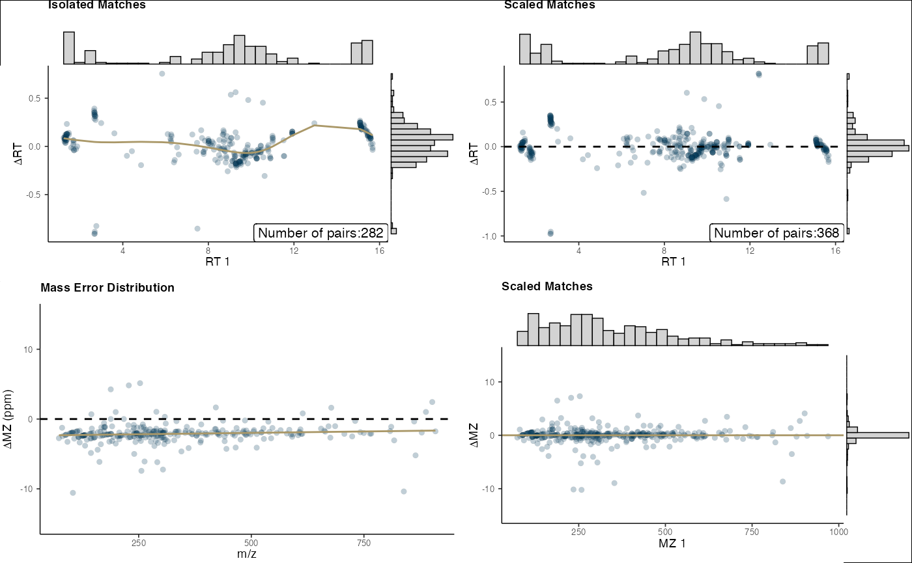
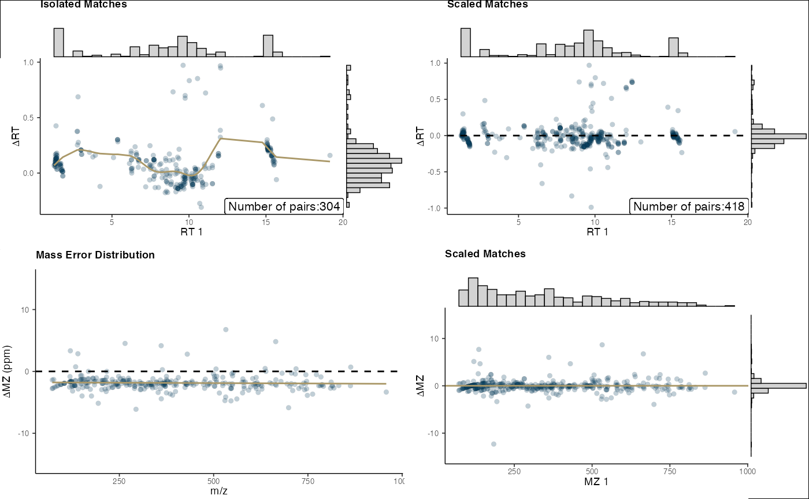
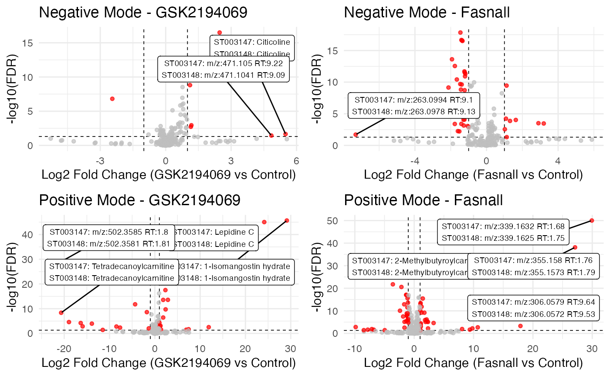
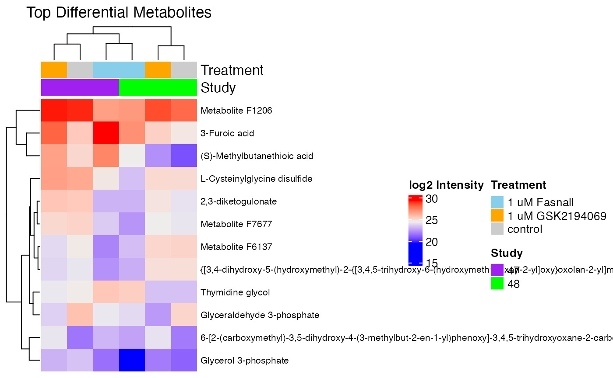
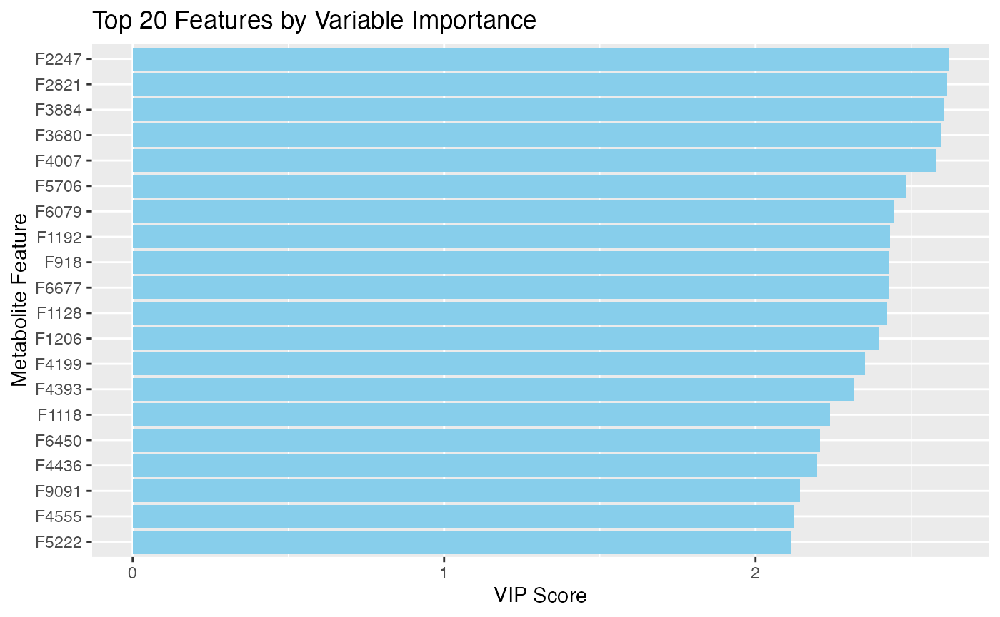

BT-474 Breast Cancer Cell Line Analysis
Chiraag Gohel
Source:vignettes/bt-474_analysis.Rmd
bt-474_analysis.Rmd
# Load required libraries
library(massSight)
library(readr)
library(dplyr)
#>
#> Attaching package: 'dplyr'
#> The following objects are masked from 'package:stats':
#>
#> filter, lag
#> The following objects are masked from 'package:base':
#>
#> intersect, setdiff, setequal, union
library(ggplot2)
library(stringr)
library(tidyr)
library(purrr)
library(janitor)
#>
#> Attaching package: 'janitor'
#> The following objects are masked from 'package:stats':
#>
#> chisq.test, fisher.test
library(ggrepel)
library(cowplot)
library(RColorBrewer)
library(cluster)Introduction
This analysis examines two independent LC-MS datasets from BT-474 breast cancer cell lines treated with fatty acid synthesis inhibitors. We’ll use massSight to integrate these datasets and perform comprehensive downstream analysis including differential expression, pathway analysis, and multivariate statistical modeling.
The data can be downloaded from here.
Data Import and Processing
First, we’ll import the data from the original BT-474 files and create massSight objects:
bt_directories <- list.dirs("/path/to/bt-474", recursive = FALSE) |>
list.dirs(recursive = FALSE) |>
list.dirs(recursive = FALSE)
# Create named list using directory structure
bt_data <- bt_directories |>
purrr::map(\(path) {
# Extract sample name and polarity from path
parts <- str_split(path, "/")[[1]]
sample_id <- parts[length(parts) - 2] # e.g. "st003147"
polarity <- str_extract(parts[length(parts) - 1], "(?<=-)\\w+") # extracts "neg" from "pcpfm-neg"
name <- paste(sample_id, polarity, sep = "_") # creates "st003147_neg"
raw_table <- read_delim(paste0(path, "/output/preferred_no_blanks_Feature_table.tsv")) |>
clean_names()
normalized_table <- read_delim(paste0(path, "/output/normalized_Feature_table.tsv")) |>
clean_names()
# Get the asari project directory by finding the directory matching the pattern
asari_dir <- list.files(path, pattern = "asari.*project.*", full.names = TRUE)
annotations <- read_delim(file.path(asari_dir, "Feature_annotation.tsv")) |>
clean_names()
ms_data <- tibble(
id_number = normalized_table$id_number,
mz = raw_table$mz,
rt = raw_table$rtime/60,
intensity = normalized_table$peak_area
) |>
left_join(
annotations |>
select(peak_id_number, emp_cpd_ion_relation, name_1st_guess),
by = c("id_number" = "peak_id_number")
)
# Filter for specific adducts based on polarity
if (polarity == "neg") {
ms_data <- ms_data |>
filter(emp_cpd_ion_relation == "M0,M-H-")
} else {
ms_data <- ms_data |>
filter(emp_cpd_ion_relation == "M0,M+H+")
}
list(
name = name,
ms_data = ms_data,
raw_table = raw_table,
normalized_table = normalized_table,
annotations = annotations
)
}) |>
set_names(map_chr(bt_directories, \(path) {
parts <- str_split(path, "/")[[1]]
sample_id <- parts[length(parts) - 2]
polarity <- str_extract(parts[length(parts) - 1], "(?<=-)\\w+")
paste(sample_id, polarity, sep = "_")
}))
#> Rows: 6201 Columns: 20
#> ── Column specification ────────────────────────────────────────────────────────
#> Delimiter: "\t"
#> chr (1): id_number
#> dbl (19): mz, rtime, rtime_left_base, rtime_right_base, parent_masstrack_id,...
#>
#> ℹ Use `spec()` to retrieve the full column specification for this data.
#> ℹ Specify the column types or set `show_col_types = FALSE` to quiet this message.
#> Rows: 6201 Columns: 20
#> ── Column specification ────────────────────────────────────────────────────────
#> Delimiter: "\t"
#> chr (1): id_number
#> dbl (19): mz, rtime, rtime_left_base, rtime_right_base, parent_masstrack_id,...
#>
#> ℹ Use `spec()` to retrieve the full column specification for this data.
#> ℹ Specify the column types or set `show_col_types = FALSE` to quiet this message.
#> Rows: 10280 Columns: 11
#> ── Column specification ────────────────────────────────────────────────────────
#> Delimiter: "\t"
#> chr (7): [peak]id_number, [EmpCpd]interim_id , [EmpCpd]ion_relati...
#> dbl (4): mz, rtime, apex(scan number), neutral_formula_mass
#>
#> ℹ Use `spec()` to retrieve the full column specification for this data.
#> ℹ Specify the column types or set `show_col_types = FALSE` to quiet this message.
#> Rows: 6583 Columns: 20
#> ── Column specification ────────────────────────────────────────────────────────
#> Delimiter: "\t"
#> chr (1): id_number
#> dbl (19): mz, rtime, rtime_left_base, rtime_right_base, parent_masstrack_id,...
#>
#> ℹ Use `spec()` to retrieve the full column specification for this data.
#> ℹ Specify the column types or set `show_col_types = FALSE` to quiet this message.
#> Rows: 6583 Columns: 20
#> ── Column specification ────────────────────────────────────────────────────────
#> Delimiter: "\t"
#> chr (1): id_number
#> dbl (19): mz, rtime, rtime_left_base, rtime_right_base, parent_masstrack_id,...
#>
#> ℹ Use `spec()` to retrieve the full column specification for this data.
#> ℹ Specify the column types or set `show_col_types = FALSE` to quiet this message.
#> Rows: 11165 Columns: 11
#> ── Column specification ────────────────────────────────────────────────────────
#> Delimiter: "\t"
#> chr (7): [peak]id_number, [EmpCpd]interim_id , [EmpCpd]ion_relati...
#> dbl (4): mz, rtime, apex(scan number), neutral_formula_mass
#>
#> ℹ Use `spec()` to retrieve the full column specification for this data.
#> ℹ Specify the column types or set `show_col_types = FALSE` to quiet this message.
#> Rows: 9403 Columns: 29
#> ── Column specification ────────────────────────────────────────────────────────
#> Delimiter: "\t"
#> chr (1): id_number
#> dbl (28): mz, rtime, rtime_left_base, rtime_right_base, parent_masstrack_id,...
#>
#> ℹ Use `spec()` to retrieve the full column specification for this data.
#> ℹ Specify the column types or set `show_col_types = FALSE` to quiet this message.
#> Rows: 9403 Columns: 29
#> ── Column specification ────────────────────────────────────────────────────────
#> Delimiter: "\t"
#> chr (1): id_number
#> dbl (28): mz, rtime, rtime_left_base, rtime_right_base, parent_masstrack_id,...
#>
#> ℹ Use `spec()` to retrieve the full column specification for this data.
#> ℹ Specify the column types or set `show_col_types = FALSE` to quiet this message.
#> Rows: 15260 Columns: 11
#> ── Column specification ────────────────────────────────────────────────────────
#> Delimiter: "\t"
#> chr (7): [peak]id_number, [EmpCpd]interim_id , [EmpCpd]ion_relati...
#> dbl (4): mz, rtime, apex(scan number), neutral_formula_mass
#>
#> ℹ Use `spec()` to retrieve the full column specification for this data.
#> ℹ Specify the column types or set `show_col_types = FALSE` to quiet this message.
#> Rows: 9033 Columns: 29
#> ── Column specification ────────────────────────────────────────────────────────
#> Delimiter: "\t"
#> chr (1): id_number
#> dbl (28): mz, rtime, rtime_left_base, rtime_right_base, parent_masstrack_id,...
#>
#> ℹ Use `spec()` to retrieve the full column specification for this data.
#> ℹ Specify the column types or set `show_col_types = FALSE` to quiet this message.
#> Rows: 9033 Columns: 29
#> ── Column specification ────────────────────────────────────────────────────────
#> Delimiter: "\t"
#> chr (1): id_number
#> dbl (28): mz, rtime, rtime_left_base, rtime_right_base, parent_masstrack_id,...
#>
#> ℹ Use `spec()` to retrieve the full column specification for this data.
#> ℹ Specify the column types or set `show_col_types = FALSE` to quiet this message.
#> Rows: 13445 Columns: 11
#> ── Column specification ────────────────────────────────────────────────────────
#> Delimiter: "\t"
#> chr (7): [peak]id_number, [EmpCpd]interim_id , [EmpCpd]ion_relati...
#> dbl (4): mz, rtime, apex(scan number), neutral_formula_mass
#>
#> ℹ Use `spec()` to retrieve the full column specification for this data.
#> ℹ Specify the column types or set `show_col_types = FALSE` to quiet this message.
#> Rows: 10260 Columns: 30
#> ── Column specification ────────────────────────────────────────────────────────
#> Delimiter: "\t"
#> chr (1): id_number
#> dbl (29): mz, rtime, rtime_left_base, rtime_right_base, parent_masstrack_id,...
#>
#> ℹ Use `spec()` to retrieve the full column specification for this data.
#> ℹ Specify the column types or set `show_col_types = FALSE` to quiet this message.
#> Rows: 10260 Columns: 30
#> ── Column specification ────────────────────────────────────────────────────────
#> Delimiter: "\t"
#> chr (1): id_number
#> dbl (29): mz, rtime, rtime_left_base, rtime_right_base, parent_masstrack_id,...
#>
#> ℹ Use `spec()` to retrieve the full column specification for this data.
#> ℹ Specify the column types or set `show_col_types = FALSE` to quiet this message.
#> Rows: 47166 Columns: 11
#> ── Column specification ────────────────────────────────────────────────────────
#> Delimiter: "\t"
#> chr (7): [peak]id_number, [EmpCpd]interim_id , [EmpCpd]ion_relati...
#> dbl (4): mz, rtime, apex(scan number), neutral_formula_mass
#>
#> ℹ Use `spec()` to retrieve the full column specification for this data.
#> ℹ Specify the column types or set `show_col_types = FALSE` to quiet this message.
#> Rows: 9990 Columns: 32
#> ── Column specification ────────────────────────────────────────────────────────
#> Delimiter: "\t"
#> chr (1): id_number
#> dbl (31): mz, rtime, rtime_left_base, rtime_right_base, parent_masstrack_id,...
#>
#> ℹ Use `spec()` to retrieve the full column specification for this data.
#> ℹ Specify the column types or set `show_col_types = FALSE` to quiet this message.
#> Rows: 9990 Columns: 32
#> ── Column specification ────────────────────────────────────────────────────────
#> Delimiter: "\t"
#> chr (1): id_number
#> dbl (31): mz, rtime, rtime_left_base, rtime_right_base, parent_masstrack_id,...
#>
#> ℹ Use `spec()` to retrieve the full column specification for this data.
#> ℹ Specify the column types or set `show_col_types = FALSE` to quiet this message.
#> Rows: 50499 Columns: 11
#> ── Column specification ────────────────────────────────────────────────────────
#> Delimiter: "\t"
#> chr (7): [peak]id_number, [EmpCpd]interim_id , [EmpCpd]ion_relati...
#> dbl (4): mz, rtime, apex(scan number), neutral_formula_mass
#>
#> ℹ Use `spec()` to retrieve the full column specification for this data.
#> ℹ Specify the column types or set `show_col_types = FALSE` to quiet this message.Creating massSight Objects
Transform the data into massSight objects for alignment:
ms_objects <- bt_data |>
map(\(x) {
create_ms_obj(
x$ms_data,
name = x$name,
id_name = "id_number",
mz_name = "mz",
rt_name = "rt",
int_name = "intensity",
metab_name = "name_1st_guess"
)
})Aligning Datasets with massSight
Use the mass_combine function to align metabolites
across datasets:
# Negative mode datasets
neg_out <- mass_combine(ms_objects$st003147_neg,
ms_objects$st003148_neg,
log = NULL
)
#> Optimizing parameters using Bayesian optimization...
#> Initializing optimization...
#> Optimization complete. Final score: 0.950
#>
#> Optimal parameters:
#> RT delta: 0.984
#> MZ delta: 10.935
#> RT isolation threshold: 0.010
#> MZ isolation threshold: 1.765
#> Alpha rank: 0.013
#> Alpha RT: 1.855
#> Alpha MZ: 0.217
# Positive mode datasets
pos_out <- mass_combine(ms_objects$st003147_pos,
ms_objects$st003148_pos,
log = NULL
)
#> Optimizing parameters using Bayesian optimization...
#> Initializing optimization...
#> Optimization complete. Final score: 0.948
#>
#> Optimal parameters:
#> RT delta: 1.000
#> MZ delta: 15.755
#> RT isolation threshold: 0.088
#> MZ isolation threshold: 4.405
#> Alpha rank: -1.988
#> Alpha RT: 0.756
#> Alpha MZ: 1.999
# Visualize alignment results
final_plots(neg_out)
final_plots(pos_out)
Loading and Processing Sample Metadata
# Load metadata
metadata_47_pos <- jsonlite::fromJSON("/Users/chiraag/Box/massSight/data/bt-474/st003147/positive.json")
metadata_47_neg <- jsonlite::fromJSON("/Users/chiraag/Box/massSight/data/bt-474/st003147/negative.json")
metadata_48_pos <- jsonlite::fromJSON("/Users/chiraag/Box/massSight/data/bt-474/st003148/positive.json")
metadata_48_neg <- jsonlite::fromJSON("/Users/chiraag/Box/massSight/data/bt-474/st003148/negative.json")
# Process metadata
metadata_47_neg <- bind_cols(
"id" = metadata_47_neg$SUBJECT_SAMPLE_FACTORS$`Sample ID`,
metadata_47_neg$SUBJECT_SAMPLE_FACTORS$Factors
) |>
as_tibble() |>
mutate(study = "47") |>
clean_names()
metadata_48_neg <- bind_cols(
"id" = metadata_48_neg$SUBJECT_SAMPLE_FACTORS$`Sample ID`,
metadata_48_neg$SUBJECT_SAMPLE_FACTORS$Factors
) |>
as_tibble() |>
mutate(study = "48") |>
clean_names()
metadata_47_pos <- bind_cols(
"id" = metadata_47_pos$SUBJECT_SAMPLE_FACTORS$`Sample ID`,
metadata_47_pos$SUBJECT_SAMPLE_FACTORS$Factors
) |>
as_tibble() |>
mutate(study = "47") |>
clean_names()
metadata_48_pos <- bind_cols(
"id" = metadata_48_pos$SUBJECT_SAMPLE_FACTORS$`Sample ID`,
metadata_48_pos$SUBJECT_SAMPLE_FACTORS$Factors
) |>
as_tibble() |>
mutate(study = "48") |>
clean_names()
# Combine metadata
pos_metadata <- bind_rows(metadata_47_pos, metadata_48_pos) |>
mutate(drug_treatment = ifelse(drug_treatment == "NA" | drug_treatment == "Vehicle", "control", drug_treatment)) |>
mutate(drug_treatment = factor(drug_treatment, levels = c("control", "1 uM Fasnall","1 uM GSK2194069")))
neg_metadata <- bind_rows(metadata_47_neg, metadata_48_neg) |>
mutate(drug_treatment = ifelse(drug_treatment == "NA" | drug_treatment == "Vehicle", "control", drug_treatment)) |>
mutate(drug_treatment = factor(drug_treatment, levels = c("control", "1 uM Fasnall","1 uM GSK2194069")))Extracting and Integrating Feature Data
# Extract normalized features instead of raw
st003147_neg <- bt_data$st003147_neg$normalized_table |>
select(id_number, contains("m22")) |>
rename("Compound_ID_st003147_neg" = id_number)
st003148_neg <- bt_data$st003148_neg$normalized_table |>
select(id_number, contains("bt474")) |>
rename("Compound_ID_st003148_neg" = id_number)
# Extract positive mode features
st003147_pos <- bt_data$st003147_pos$normalized_table |>
select(id_number, contains("m22")) |>
rename("Compound_ID_st003147_pos" = id_number)
st003148_pos <- bt_data$st003148_pos$normalized_table |>
select(id_number, contains("bt474")) |>
rename("Compound_ID_st003148_pos" = id_number)
# Get feature mapping from mass_combine results
feature_mapping <- neg_out |>
get_unique_matches() |>
select(Compound_ID_st003147_neg, Compound_ID_st003148_neg, rep_Compound_ID,
Metabolite_st003147_neg, Metabolite_st003148_neg)
# Get unique matches from negative mode dataset
full_neg <- neg_out |>
get_unique_matches() |>
left_join(st003147_neg, by = "Compound_ID_st003147_neg") |>
left_join(st003148_neg, by = "Compound_ID_st003148_neg") |>
select(contains("Compound_ID"), contains("RT"), contains("MZ"), contains("Metabolite"), contains("m22"), contains("bt474")) |>
pivot_longer(
cols = c(contains("m22"), contains("bt474")),
names_to = "sample",
values_to = "intensity"
) |>
left_join(
neg_metadata |>
mutate(id = tolower(gsub(
"-", "_",
ifelse(grepl("^[0-9]", id),
paste0("x", id),
id
)
))),
by = c("sample" = "id")
)
# Filter for high-prevalence features
high_prevalence_neg <- full_neg |>
group_by(study, rep_Compound_ID) |>
summarise(
n_samples = n(),
n_detected = sum(!is.na(intensity) & intensity > 0),
prevalence = n_detected / n_samples,
.groups = "drop"
) |>
group_by(rep_Compound_ID) |>
filter(n() == 2, # Ensure compound appears in both studies
all(prevalence > 0.8)) |> # High prevalence in both
select(study, rep_Compound_ID) |>
left_join(full_neg, by = c("study", "rep_Compound_ID")) |>
mutate(drug_treatment = factor(drug_treatment, levels = c("control", "1 uM Fasnall","1 uM GSK2194069")))
# Get unique matches from positive mode dataset (similar process)
# Get unique matches from positive mode dataset
full_pos <- pos_out |>
get_unique_matches() |>
left_join(st003147_pos, by = "Compound_ID_st003147_pos") |>
left_join(st003148_pos, by = "Compound_ID_st003148_pos") |>
select(contains("Compound_ID"), contains("RT"), contains("MZ"), contains("Metabolite"), contains("m22"), contains("bt474")) |>
pivot_longer(
cols = c(contains("m22"), contains("bt474")),
names_to = "sample",
values_to = "intensity"
) |>
left_join(
pos_metadata |>
mutate(id = tolower(gsub(
"-", "_",
ifelse(grepl("^[0-9]", id),
paste0("x", id),
id
)
))),
by = c("sample" = "id")
)
# Filter for high-prevalence features
high_prevalence_pos <- full_pos |>
group_by(study, rep_Compound_ID) |>
summarise(
n_samples = n(),
n_detected = sum(!is.na(intensity) & intensity > 0),
prevalence = n_detected / n_samples,
.groups = "drop"
) |>
group_by(rep_Compound_ID) |>
filter(n() == 2, # Ensure compound appears in both studies
all(prevalence > 0.8)) |> # High prevalence in both
select(study, rep_Compound_ID) |>
left_join(full_pos, by = c("study", "rep_Compound_ID")) |>
mutate(drug_treatment = factor(drug_treatment, levels = c("control", "1 uM Fasnall","1 uM GSK2194069")))Differential Expression Analysis
# Negative mode linear modeling
lm_neg <- high_prevalence_neg |>
mutate(drug_treatment = factor(drug_treatment, levels = c("control", "1 uM Fasnall","1 uM GSK2194069")),
study = factor(study, levels = c("47", "48"))) |>
group_by(rep_Compound_ID) |>
nest() |>
mutate(
model = map(data, ~lm(log2(intensity + 1) ~ drug_treatment + study, data = .)),
tidied = map(model, broom::tidy)
) |>
unnest(tidied) |>
select(rep_Compound_ID, term, estimate, std.error, statistic, p.value) |>
mutate(
fdr = p.adjust(p.value, method = "BH")
)
# Filter for GSK2194069 results
gsk_results_neg <- lm_neg |>
filter(term == "drug_treatment1 uM GSK2194069") |>
left_join(
neg_out |>
get_unique_matches() |>
select(
rep_Compound_ID,
contains("Compound_ID"),
contains("Metabolite"),
contains("MZ"),
contains("RT")
),
by = "rep_Compound_ID"
)
# Filter for Fasnall results
fas_results_neg <- lm_neg |>
filter(term == "drug_treatment1 uM Fasnall") |>
left_join(
neg_out |>
get_unique_matches() |>
select(
rep_Compound_ID,
contains("Compound_ID"),
contains("Metabolite"),
contains("MZ"),
contains("RT")
),
by = "rep_Compound_ID"
)
# Summary of differential metabolites
sig_threshold <- 0.05
fc_threshold <- 1
gsk_sig_metabolites <- gsk_results_neg |>
filter(fdr < sig_threshold & abs(estimate) > fc_threshold)
fas_sig_metabolites <- fas_results_neg |>
filter(fdr < sig_threshold & abs(estimate) > fc_threshold)
cat("GSK2194069 significant metabolites:", nrow(gsk_sig_metabolites), "\n")
#> GSK2194069 significant metabolites: 7
cat("Fasnall significant metabolites:", nrow(fas_sig_metabolites), "\n")
#> Fasnall significant metabolites: 34
# Create similar analysis for positive mode data
# Fit linear models for positive mode data
lm_pos <- full_pos |>
mutate(drug_treatment = factor(drug_treatment, levels = c("control", "1 uM Fasnall","1 uM GSK2194069"))) |>
group_by(rep_Compound_ID) |>
nest() |>
mutate(
model = map(data, \(d) lm(log2(intensity + 1) ~ drug_treatment + study, data = d)),
tidied = map(model, broom::tidy)
) |>
unnest(tidied) |>
select(rep_Compound_ID, term, estimate, std.error, statistic, p.value) |>
mutate(
fdr = p.adjust(p.value, method = "BH")
)
# Filter for GSK2194069 results
gsk_results_pos <- lm_pos |>
filter(term == "drug_treatment1 uM GSK2194069") |>
left_join(
pos_out |>
get_unique_matches() |>
select(
rep_Compound_ID,
contains("Metabolite"),
contains("MZ"),
contains("RT")
),
by = "rep_Compound_ID"
)
# Filter for Fasnall results
fas_results_pos <- lm_pos |>
filter(term == "drug_treatment1 uM Fasnall") |>
left_join(
pos_out |>
get_unique_matches() |>
select(
rep_Compound_ID,
contains("Metabolite"),
contains("MZ"),
contains("RT")
),
by = "rep_Compound_ID"
)
# Summary of differential metabolites for positive mode
gsk_sig_metabolites_pos <- gsk_results_pos |>
filter(fdr < sig_threshold & abs(estimate) > fc_threshold)
fas_sig_metabolites_pos <- fas_results_pos |>
filter(fdr < sig_threshold & abs(estimate) > fc_threshold)
cat("GSK2194069 significant metabolites (positive mode):", nrow(gsk_sig_metabolites_pos), "\n")
#> GSK2194069 significant metabolites (positive mode): 26
cat("Fasnall significant metabolites (positive mode):", nrow(fas_sig_metabolites_pos), "\n")
#> Fasnall significant metabolites (positive mode): 53Volcano Plots for Visualization
# Negative mode GSK2194069 plot
neg_gsk_plot <- gsk_results_neg |>
mutate(
significant = abs(estimate) > fc_threshold & fdr < sig_threshold,
label = ifelse(abs(estimate) > 3 & fdr < sig_threshold,
paste0(
"ST003147: ",
ifelse(is.na(Metabolite_st003147_neg),
paste0("m/z:", round(MZ_st003147_neg, 4), " RT:", round(RT_st003147_neg, 2)),
Metabolite_st003147_neg),
"\n",
"ST003148: ",
ifelse(is.na(Metabolite_st003148_neg),
paste0("m/z:", round(MZ_st003148_neg, 4), " RT:", round(RT_st003148_neg, 2)),
Metabolite_st003148_neg)
),
"")
) |>
ggplot(aes(x = estimate, y = -log10(fdr))) +
geom_hline(yintercept = -log10(sig_threshold), linetype = "dashed", size = 0.3) +
geom_vline(xintercept = c(-fc_threshold, fc_threshold), linetype = "dashed", size = 0.3) +
geom_point(aes(color = significant), size = 1.2, alpha = 0.7) +
geom_label_repel(
aes(label = label),
max.overlaps = 20,
size = 2.5,
force = 10
) +
scale_color_manual(values = c("grey", "red")) +
labs(
x = "Log2 Fold Change (GSK2194069 vs Control)",
y = "-log10(FDR)",
title = "Negative Mode - GSK2194069"
) +
theme_minimal() +
theme(legend.position = "none")
#> Warning: Using `size` aesthetic for lines was deprecated in ggplot2 3.4.0.
#> ℹ Please use `linewidth` instead.
#> This warning is displayed once every 8 hours.
#> Call `lifecycle::last_lifecycle_warnings()` to see where this warning was
#> generated.
# Negative mode Fasnall plot
neg_fas_plot <- fas_results_neg |>
mutate(
significant = abs(estimate) > fc_threshold & fdr < sig_threshold,
label = ifelse(abs(estimate) > 3 & fdr < sig_threshold,
paste0(
"ST003147: ",
ifelse(is.na(Metabolite_st003147_neg),
paste0("m/z:", round(MZ_st003147_neg, 4), " RT:", round(RT_st003147_neg, 2)),
Metabolite_st003147_neg),
"\n",
"ST003148: ",
ifelse(is.na(Metabolite_st003148_neg),
paste0("m/z:", round(MZ_st003148_neg, 4), " RT:", round(RT_st003148_neg, 2)),
Metabolite_st003148_neg)
),
"")
) |>
ggplot(aes(x = estimate, y = -log10(fdr))) +
geom_hline(yintercept = -log10(sig_threshold), linetype = "dashed", size = 0.3) +
geom_vline(xintercept = c(-fc_threshold, fc_threshold), linetype = "dashed", size = 0.3) +
geom_point(aes(color = significant), size = 1.2, alpha = 0.7) +
geom_label_repel(
aes(label = label),
max.overlaps = 20,
size = 2.5,
force = 10
) +
scale_color_manual(values = c("grey", "red")) +
labs(
x = "Log2 Fold Change (Fasnall vs Control)",
y = "-log10(FDR)",
title = "Negative Mode - Fasnall"
) +
theme_minimal() +
theme(legend.position = "none")
# Positive mode GSK2194069 plot
pos_gsk_plot <- gsk_results_pos |>
mutate(
significant = abs(estimate) > fc_threshold & fdr < sig_threshold,
label = ifelse(abs(estimate) > 3 & fdr < sig_threshold,
paste0(
"ST003147: ",
ifelse(is.na(Metabolite_st003147_pos),
paste0("m/z:", round(MZ_st003147_pos, 4), " RT:", round(RT_st003147_pos, 2)),
Metabolite_st003147_pos),
"\n",
"ST003148: ",
ifelse(is.na(Metabolite_st003148_pos),
paste0("m/z:", round(MZ_st003148_pos, 4), " RT:", round(RT_st003148_pos, 2)),
Metabolite_st003148_pos)
),
"")
) |>
ggplot(aes(x = estimate, y = -log10(fdr))) +
geom_hline(yintercept = -log10(sig_threshold), linetype = "dashed", size = 0.3) +
geom_vline(xintercept = c(-fc_threshold, fc_threshold), linetype = "dashed", size = 0.3) +
geom_point(aes(color = significant), size = 1.2, alpha = 0.7) +
geom_label_repel(
aes(label = label),
max.overlaps = 20,
size = 2.5,
force = 10
) +
scale_color_manual(values = c("grey", "red")) +
labs(
x = "Log2 Fold Change (GSK2194069 vs Control)",
y = "-log10(FDR)",
title = "Positive Mode - GSK2194069"
) +
theme_minimal() +
theme(legend.position = "none")
# Positive mode Fasnall plot
pos_fas_plot <- fas_results_pos |>
mutate(
significant = abs(estimate) > fc_threshold & fdr < sig_threshold,
label = ifelse(abs(estimate) > 3 & fdr < sig_threshold,
paste0(
"ST003147: ",
ifelse(is.na(Metabolite_st003147_pos),
paste0("m/z:", round(MZ_st003147_pos, 4), " RT:", round(RT_st003147_pos, 2)),
Metabolite_st003147_pos),
"\n",
"ST003148: ",
ifelse(is.na(Metabolite_st003148_pos),
paste0("m/z:", round(MZ_st003148_pos, 4), " RT:", round(RT_st003148_pos, 2)),
Metabolite_st003148_pos)
),
"")
) |>
ggplot(aes(x = estimate, y = -log10(fdr))) +
geom_hline(yintercept = -log10(sig_threshold), linetype = "dashed", size = 0.3) +
geom_vline(xintercept = c(-fc_threshold, fc_threshold), linetype = "dashed", size = 0.3) +
geom_point(aes(color = significant), size = 1.2, alpha = 0.7) +
geom_label_repel(
aes(label = label),
max.overlaps = 20,
size = 2.5,
force = 10
) +
scale_color_manual(values = c("grey", "red")) +
labs(
x = "Log2 Fold Change (Fasnall vs Control)",
y = "-log10(FDR)",
title = "Positive Mode - Fasnall"
) +
theme_minimal() +
theme(legend.position = "none")
# Combine all plots
plot_grid(neg_gsk_plot, neg_fas_plot, pos_gsk_plot, pos_fas_plot, ncol = 2)
#> Warning: ggrepel: 1 unlabeled data points (too many overlaps). Consider
#> increasing max.overlaps
#> Warning: ggrepel: 11 unlabeled data points (too many overlaps). Consider increasing max.overlaps
#> ggrepel: 11 unlabeled data points (too many overlaps). Consider increasing max.overlaps
Enhanced Visualization with Heatmaps
# Extract top differential metabolites for heatmap
top_metabolites <- rbind(
gsk_results_neg |> filter(fdr < 0.01, abs(estimate) > 1.5) |> head(30),
fas_results_neg |> filter(fdr < 0.01, abs(estimate) > 1.5) |> head(30)
) |>
distinct(rep_Compound_ID, .keep_all = TRUE)
# Create expression matrix for heatmap
heatmap_data <- high_prevalence_neg |>
filter(rep_Compound_ID %in% top_metabolites$rep_Compound_ID) |>
group_by(rep_Compound_ID, drug_treatment, study) |>
summarise(avg_intensity = mean(log2(intensity + 1), na.rm = TRUE), .groups = "drop") |>
unite("group", c(drug_treatment, study), remove = FALSE) |>
pivot_wider(id_cols = rep_Compound_ID, names_from = group, values_from = avg_intensity) |>
as.data.frame()
row_names <- top_metabolites |>
select(rep_Compound_ID, Metabolite_st003147_neg) |>
mutate(name = ifelse(is.na(Metabolite_st003147_neg),
paste0("Metabolite ", rep_Compound_ID),
Metabolite_st003147_neg)) |>
pull(name)
# Convert to matrix for heatmap
mat <- as.matrix(heatmap_data[,-1])
rownames(mat) <- row_names
# Create annotation for columns
treatment_colors <- c("control" = "grey80", "1 uM Fasnall" = "skyblue", "1 uM GSK2194069" = "orange")
study_colors <- c("47" = "purple", "48" = "green")
col_anno <- data.frame(
Treatment = gsub("_.*$", "", colnames(mat)),
Study = gsub("^.*_", "", colnames(mat))
)
column_ha <- ComplexHeatmap::HeatmapAnnotation(
Treatment = col_anno$Treatment,
Study = col_anno$Study,
col = list(
Treatment = treatment_colors,
Study = study_colors
)
)
# Draw heatmap
hm <- ComplexHeatmap::Heatmap(
mat,
name = "log2 Intensity",
column_title = "Top Differential Metabolites",
cluster_rows = TRUE,
cluster_columns = TRUE,
show_row_names = TRUE,
show_column_names = FALSE,
top_annotation = column_ha,
row_names_gp = grid::gpar(fontsize = 8)
)
# Display heatmap
hm
Multivariate Analysis
# Prepare data for PLS-DA
plsda_data <- high_prevalence_neg |>
select(rep_Compound_ID, sample, intensity, drug_treatment, study) |>
pivot_wider(
id_cols = c(sample, drug_treatment, study),
names_from = rep_Compound_ID,
values_from = intensity,
values_fill = 0
)
# Extract X (metabolites) and Y (treatment groups) matrices
X <- as.matrix(log2(plsda_data[, 4:ncol(plsda_data)] + 1))
Y <- plsda_data$drug_treatment
# Perform PLS-DA
plsda_result <- mixOmics::plsda(X, Y, ncomp = 5)
# Plot results
mixOmics::plotIndiv(plsda_result,
group = Y,
legend = TRUE,
title = "PLS-DA of BT-474 Treatments",
ellipse = TRUE,
ind.names = TRUE)
# Variable importance
vip_scores <- mixOmics::vip(plsda_result)
top_vip <- data.frame(
feature = colnames(X),
VIP = vip_scores[,1]
) |>
arrange(desc(VIP)) |>
head(20)
# Plot VIP scores
ggplot(top_vip, aes(x = reorder(feature, VIP), y = VIP)) +
geom_bar(stat = "identity", fill = "skyblue") +
coord_flip() +
labs(x = "Metabolite Feature", y = "VIP Score",
title = "Top 20 Features by Variable Importance")
Exploring Treatment-Specific Effects
# Compare GSK vs Fasnall effects
comparison_df <- inner_join(
gsk_results_neg |> select(rep_Compound_ID, gsk_estimate = estimate, gsk_fdr = fdr),
fas_results_neg |> select(rep_Compound_ID, fas_estimate = estimate, fas_fdr = fdr),
by = "rep_Compound_ID"
) |>
mutate(
gsk_significant = gsk_fdr < sig_threshold & abs(gsk_estimate) > fc_threshold,
fas_significant = fas_fdr < sig_threshold & abs(fas_estimate) > fc_threshold,
both_significant = gsk_significant & fas_significant,
gsk_only = gsk_significant & !fas_significant,
fas_only = fas_significant & !gsk_significant,
effect_category = case_when(
both_significant & sign(gsk_estimate) == sign(fas_estimate) ~ "Shared Effect",
both_significant & sign(gsk_estimate) != sign(fas_estimate) ~ "Opposite Effect",
gsk_only ~ "GSK-Specific",
fas_only ~ "Fasnall-Specific",
TRUE ~ "Non-Significant"
)
)
# Summarize comparison results
comparison_summary <- comparison_df |>
group_by(effect_category) |>
summarise(count = n()) |>
arrange(desc(count))
# Scatter plot comparing treatments
comparison_plot <- ggplot(comparison_df, aes(x = gsk_estimate, y = fas_estimate, color = effect_category)) +
geom_point(alpha = 0.7) +
geom_hline(yintercept = 0, linetype = "dashed", size = 0.3) +
geom_vline(xintercept = 0, linetype = "dashed", size = 0.3) +
scale_color_brewer(palette = "Set1") +
labs(
x = "Log2 Fold Change (GSK2194069)",
y = "Log2 Fold Change (Fasnall)",
title = "Comparison of Treatment Effects",
color = "Effect Category"
) +
theme_minimal()
# Display comparison plot
comparison_plot